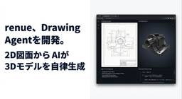
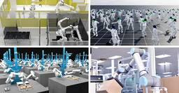
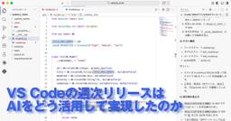
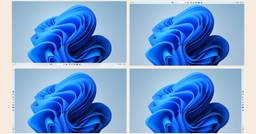
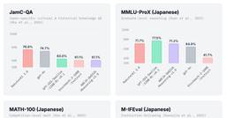
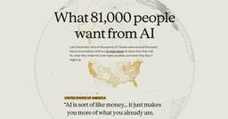

ITmedia AI＋ 最新記事一覧
https://www.itmedia.co.jp/aiplus/
生成AIを中心とするAIのビジネス活用にフォーカス。業務改善や新規事業の応用事例、活用方法、機能比較、ルール整備といった情報を読者に日々届けることで、AI活用をサポートします。
フィード
チャッピーは「笑ゥせぇるすまん」？ 米国チームが“AIへの悩み相談”に警告 イエスマン化に懸念 1
1
ITmedia AI＋ 最新記事一覧
米スタンフォード大学や米カーネギーメロン大学に所属する研究者らは、AIがユーザーに過剰に同調して機嫌をとるイエスマン化のまん延と、それが人間に与える悪影響を実証した研究報告を発表した。
4時間前
「鳥貴族」のノウハウ、大倉社長のAIアバターが伝授 DXで個別におすすめメニュー提案 1
ITmedia AI＋ 最新記事一覧
居酒屋チェーン「鳥貴族」を展開するエターナルホスピタリティグループが、AIや顧客データを活用して事業変革を図るDX（デジタルトランスフォーメーション）戦略を発表した。
5時間前

AIエージェントが図面を読み取り3D化、寸法精度を確保するWebアプリ
1
ITmedia AI＋ 最新記事一覧
renueは、2D図面から3Dモデルを生成する、Webアプリケーション「Drawing Agent」を開発した。AIエージェントが寸法や形状を読み取ることで、製造業に必要な寸法精度を確保する。
7時間前
「罰を与えるには銃を使え」──10代の凶悪犯罪に加担するAI、銃撃や爆破の計画に助言 海外団体が調査
ITmedia AI＋ 最新記事一覧
カナダで起きた10代容疑者による銃を乱射して6人を殺害した事件で、容疑者は事前の計画や準備にChatGPTを利用していた。生成AIがそうした10代の犯行に簡単に「加担」してしまう現実は実験でも実証され、衝撃が広がっている。
8時間前

足りないデータは「世界モデル」が生成 産業用ロボット大手も採用するNVIDIAのフィジカルAI基盤
ITmedia AI＋ 最新記事一覧
NVIDIAはフィジカルAI実用化を促進させる新技術群とデータ基盤を発表し、産業や医療分野での開発・検証効率化を図る。
8時間前
「2040年に売上40兆円」の勝ち筋は？ 経産省が描く「AI・半導体・ロボット」三位一体の産業戦略 1
ITmedia AI＋ 最新記事一覧
特集「AI革命、日本企業の勝ち筋」では、AIインフラを担う国内トップ企業や識者にインタビューし、AI経済圏における日本企業の展望を探っていく。1回目は概論として、生成AIも含めた半導体・デジタル産業戦略の政策立案を担う経済産業省商務情報政策局の担当者に、戦略の全体像と民間企業に期待される役割について聞いた。
9時間前
マスク氏、次世代半導体工場「Terafab」発表 計算リソースは宇宙空間へ 172
ITmedia AI＋ 最新記事一覧
イーロン・マスク氏は、次世代半導体工場「Terafab」の構想を発表した。テキサス州に建設予定の同施設は、2nmプロセスを採用し、ロジックからパッケージングまでを統合する。製造されたチップは人型ロボットや自動運転、AI衛星に活用され、将来的には計算リソースの大部分を宇宙へ配置する計画だ。
9時間前

VS Codeチームは週次リリースをどう実現したのか AIエージェント活用で見えた6つのポイント 2
ITmedia AI＋ 最新記事一覧
VS Codeが月次リリースから週次リリースへ移行するためにエージェントをどう活用しているのか。エージェントを使って開発する全ての人に参考になる内容だ。
11時間前
「ドラクエX」が生成AIキャラクター導入へ Gemini 3 Flash活用の「おしゃべりスラミィ」 131
ITmedia AI＋ 最新記事一覧
スクウェア・エニックスが、MMORPG「ドラゴンクエストX オンライン」（DQX）に、生成AIを活用した対話型パートナー機能「おしゃべりスラミィ」を導入する。GoogleのAIモデル「Gemini 3 Flash」とリアルタイム対話API「Gemini Live API」を組み合わせ、プレイヤーと音声で対話できるAIキャラクターを実現するという。
2日前
ソフトバンクGら日本企業連合、米AIデータセンターに約5兆円投資 オハイオ州で着工 4
ITmedia AI＋ 最新記事一覧
米エネルギー省は、オハイオ州のウラン濃縮施設跡地に大規模データセンターを建設する官民連携を発表した。ソフトバンクグループなど日本企業連合「ポーツマスコンソーシアム」が参加し、約5兆円を投じて10GW規模の発電施設とAIインフラを整備する。ソフトバンクグループの孫正義会長兼CEOはトランプ大統領の晩餐会とデータセンターの着工式に出席した。
2日前

Microsoft、「Windows 11」のタスクバー移動機能復活や「Copilot」統合見直しを計画 102
ITmedia AI＋ 最新記事一覧
Microsoftは、「Windows 11」の品質向上に向けた新たな取り組みを発表した。ユーザーからのフィードバックを反映し、要望の多かったタスクバーの移動機能の復活や、各アプリへのCopilot統合方針の見直し、Updateによる作業中断の軽減などを実施する。OSの安定性向上やリソース消費の抑制も継続して進める。
2日前
NVIDIA新チップ、アリババ日本展開――AIシフトを支える国内外の巨大投資 1
ITmedia AI＋ 最新記事一覧
2026年3月16～19日に公開された記事の中から、MONOist編集部が厳選した今週の注目ニュースをお届けします。
2日前

楽天、AIモデル「Rakuten AI 3.0」を無償提供 「オープンソースコミュニティ上の最良なモデル」を基に日本語能力を強化 2
ITmedia AI＋ 最新記事一覧
楽天は、国内有数の日本語特化型AIモデル「Rakuten AI 3.0」の提供を開始した。本モデルは約7000億パラメーターのMoEアーキテクチャを採用し、日本語性能で高い評価を得ている。無償公開を通じて国内のAI開発加速と技術支援を目指す。
3日前
OpenAI、Astralを買収 Python開発支援ツール「Ruff」「uv」を「Codex」へ統合 71
ITmedia AI＋ 最新記事一覧
OpenAIは、Python開発者向け高速ツールを提供するAstralを買収することで合意した。高性能なコードチェックツール「Ruff」やパッケージ管理ツール「uv」を持つ同社の技術を、プログラミング支援AI「Codex」に統合する。開発ワークフロー全体を自動化するAIシステムの進化を目指し、オープンソースの既存ツールへのサポートも継続する。
3日前
楽天の最新AI、ベースは“中国DeepSeek製”？ 担当者に聞いた 62
ITmedia AI＋ 最新記事一覧
「DeepSeekのAIモデルをベースに開発したのでは」――楽天グループの日本語LLM「Rakuten AI 3.0」を巡り、X上でこのような指摘が相次いでいる。楽天の担当者に話を聞いた。
4日前

Anthropic、約8万人のClaudeユーザー定性調査結果を発表 AIに対する期待と懸念 3
ITmedia AI＋ 最新記事一覧
Anthropicは、Claudeユーザー約8万人を対象とした大規模な多言語定性調査の結果を報告した。ユーザーはAIに「卓越した専門性」を求めており、8割以上が実用性を実感している。一方で信頼性欠如や自律性喪失への懸念も根強く、特に日本を含む東アジアではAI利用による認知能力低下を危惧する傾向が他地域より顕著だ。
4日前
Google、“バイブデザイン”ツール「Stitch」をβ公開 手書きスケッチを数秒でコード化 3
ITmedia AI＋ 最新記事一覧
Googleは、AIを活用したUIデザイン生成ツール「Stitch」（β）をLabsで公開した。直感的なニュアンスでデザインを構築する「バイブデザイン」を掲げ、買収したGalileo AIの技術とGemini 3を統合。自然言語やスケッチからプロトタイプを自動生成し、Figmaへの書き出しやReactコードの出力にも対応する。
4日前
「最もセクシー」と呼ばれた職業、データサイエンティストの今 ブームは去っても「必須の役割」 38
ITmedia AI＋ 最新記事一覧
かつて「21世紀で最もセクシーな職業」と呼ばれたデータサイエンティスト。生成AIブームの中、その役割はどう変わったのか。ガートナージャパンのアナリストである一志達也氏に、データサイエンティストの現在地と、AI人材獲得に悩む日本企業の課題を聞いた。
4日前
2028年にインシデント対応の5割はAI関連に ガートナーが予測 1
ITmedia AI＋ 最新記事一覧
ガートナーは2026年以降のセキュリティの展望として、AI普及によってリスク管理が激変すると発表した。2028年にはインシデント対応の半分がAI関連となり、規制対応の遅れやデータ負債、ID管理が複雑化するという。
4日前
Uber、日米でロボタクシー展開 日産やAmazon子会社と連携 2
ITmedia AI＋ 最新記事一覧
Uberは、Zooxと提携し米国でロボタクシーを導入すると発表した。日本でも日産やWayveと連携し東京での試験運行も計画している。
4日前